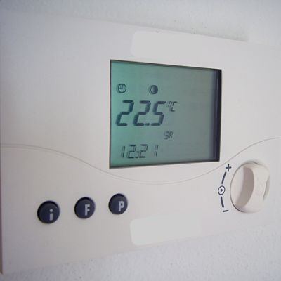

Inteligența Artificială:
de la curiozitate la înțelegere
O introducere în conceptele cheie
și impactul potențial asupra viitorului muncii.
Cozmina Secula
18.09.2025

Turing Test, 1950 - “Pot mașinile să gândească?”


O mașină este inteligentă dacă răpunsurile sale nu se pot distinge de cele ale unui om.
Istoria inteligenței artificiale


Ce este inteligența artificială?
Inteligența artificială sau IA se referă la sisteme care pot îndeplini sarcini care în mod normal necesită inteligență umană.
Exemple de sarcini:
- învățarea
- raționament logic
- rezolvarea problemelor
- înțelegerea limbajului
- recunoașterea vorbirii

Exemple de IA
Este IA


Autonomie și adaptabilitate
Nu este IA


Ce este IA generativă?
IA generativă se referă la sistemele IA care învață din datele existente pentru a crea conținut nou, precum text, imagini, muzică sau cod.


Cum funcționează IA generativă?

Cum funcționează IA generativă?

Automatizarea sarcinilor, nu a locurilor de muncă

- IA va înlocui unele sarcini repetitive prin automatizare
- În cele mai multe cazuri, va îmbunățăți capacitățile oamenilor ajutându-i să lucreze mai eficient și să fie mai productivi.
Sursa: Gmyrek, P., Berg, J., Bescond, D. AI generativă și locurile de muncă: O analiză globală a efectelor potențiale asupra cantității și calității locurilor de muncă. ILO Working Paper 96. Geneva: Biroul Internațional al Muncii, 2023.|CC BY
Care va fi impactul IA generativă în România?

IA generativă va completa și îmbunătății majoritatea locurilor de muncă din România.
Ce va determina impactul IA generativă în România?
Nivelul de digitalizare al firmelor și al administrației publice

Investițiile și utilizarea tehnologiilor IA

Nivelul de competențe digitale

Sursa: Indicatori DESI 2025 și 2024
Ce competențele devin importante în 2030? (1/2)

Ce competențele devin importante în 2030? (2/2)